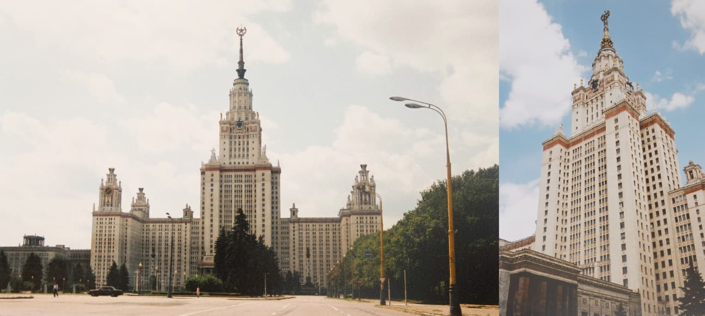
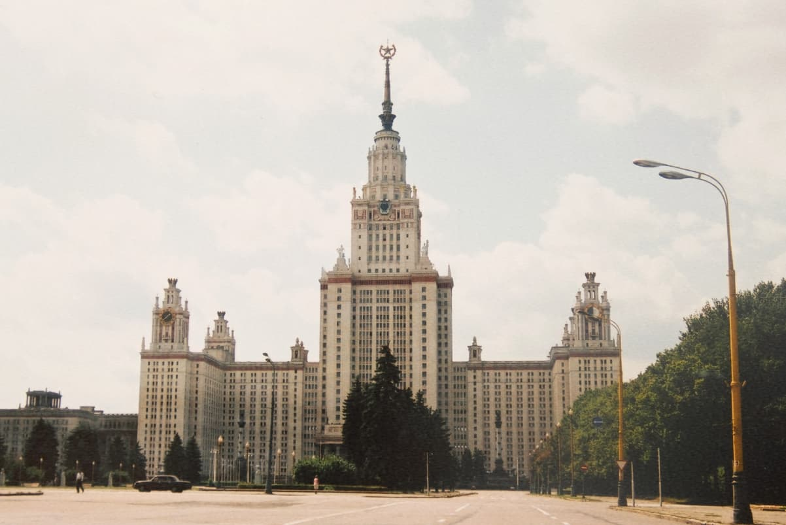
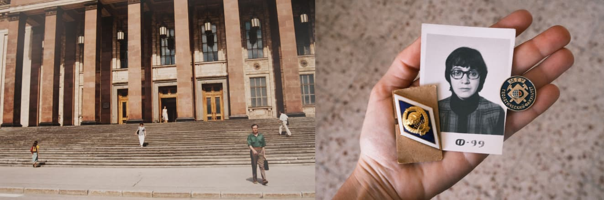

И я промолчала...
В конце 70-годов мы с мужем хотели поехать к морю с выздоравливающим ребёнком не "дикарем", а по путевке - с гарантированным жильем и питанием. Такие путевки можно было купить («получить») только в профсоюзах на работе. У мужа на работе сказали, что у них нет. Я пошла в свой факультетский профком. Там мне сказали, что и у них таких путёвок нет и посоветовали пойти в объединённый профком университета.
Там ко мне отнеслись сочувственно и предложили 2 путевки на выбор. Честно говоря, обе они были не очень и я спросила могу ли подумать. И тут профсоюзный деятель произнёс фразу, которую я до сих пор не могу забыть. Он сказал: “думайте, только не очень долго. Вы же понимаете, что это не для вас предназначено.” Он так и сказал: “вы же понимаете”. Я к тому времени проработала в университете 10 лет, ни разу не пользовалась профкомовскими путевками. По формальным критериям они да были предназначены для меня. А профкомовский деятель, посмел сказать, не опасаясь, не стесняясь, прямым текстом , что путевки для блатных, для "нужных", для "своих" людей и что я должна это понимать.
Профком и деятель были последняя и единственная возможность свозить ребёнка к морю в более сносных условиях. И я промолчала...
 Московский государственный университет (МГУ), официально - Московский государственный университет имени М. В. Ломоносова - где я училась и работала
Вот я посередине, спускаюсь по ступеням моего московского университета — во время одной из наших поездок в Москву в 2000-х. и мои университетские ордена МГУ.

Вот я посередине, спускаюсь по ступеням моего московского университета — во время одной из наших поездок в Москву в 2000-х.

и мои университетские ордена МГУ.